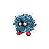

📖 英語版の図鑑説明
It is cloaked entirely in blue vines, preventing any glimpse of its true identity. The vines impart a refreshing sensation when chewed—they're useful as a spice.
日本語訳
全身を青いツタに覆われており、その正体を垣間見ることはできない。ツタは噛むと爽快感があり、香辛料としても使える。
📝 この図鑑文に出てくる英単語
| 英単語 | 意味 | 品詞 | レベル |
|---|---|---|---|
| cloaked | おおわれた | 形容詞 | 大学 |
| entirely | 完全に | 副詞 | 高校 |
| vines | つる(複数形) | 名詞 | 大学 |
| preventing | 防いでいる | 動詞 | 高校 |
| glimpse | ちらりと見ること | 名詞 | 大学 |
| identity | 正体 | 名詞 | 高校 |
| impart | 与える | 動詞 | 大学 |
| sensation | 感覚 | 名詞 | 大学 |
文法ポイント when 〜 は「〜するとき」という意味の接続詞。when のまとまりが、もう一方の文がいつ起こるかを表しています。
💡 英語名「Tangela」の由来
英語名「Tangela」は、tangle（からまる）と-ella（小さいものを表す語尾）を組み合わせた名前と考えられている。
出典 Bulbapedia
📊 モンジャラの種族値
HP65
こうげき55
ぼうぎょ115
とくこう100
とくぼう40
すばやさ60
合計 435
❓ よくある質問
- モンジャラの英語名は？
- モンジャラの英語名は「Tangela」です。
- モンジャラの英語名「Tangela」の由来は？
- 英語名「Tangela」は、tangle（からまる）と-ella（小さいものを表す語尾）を組み合わせた名前と考えられている。
- モンジャラは英語版の図鑑でどう説明されている？
- 「It is cloaked entirely in blue vines, preventing any glimpse of its true identity. The vines impart a refreshing sensation when chewed—they're useful as a spice.」と書かれています。日本語にすると「全身を青いツタに覆われており、その正体を垣間見ることはできない。ツタは噛むと爽快感があり、香辛料としても使える。」という意味です。
モンジャラは第1世代（カントー地方）のポケモンです。第1世代（カントー地方）の英語名一覧 →